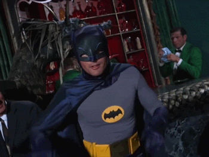
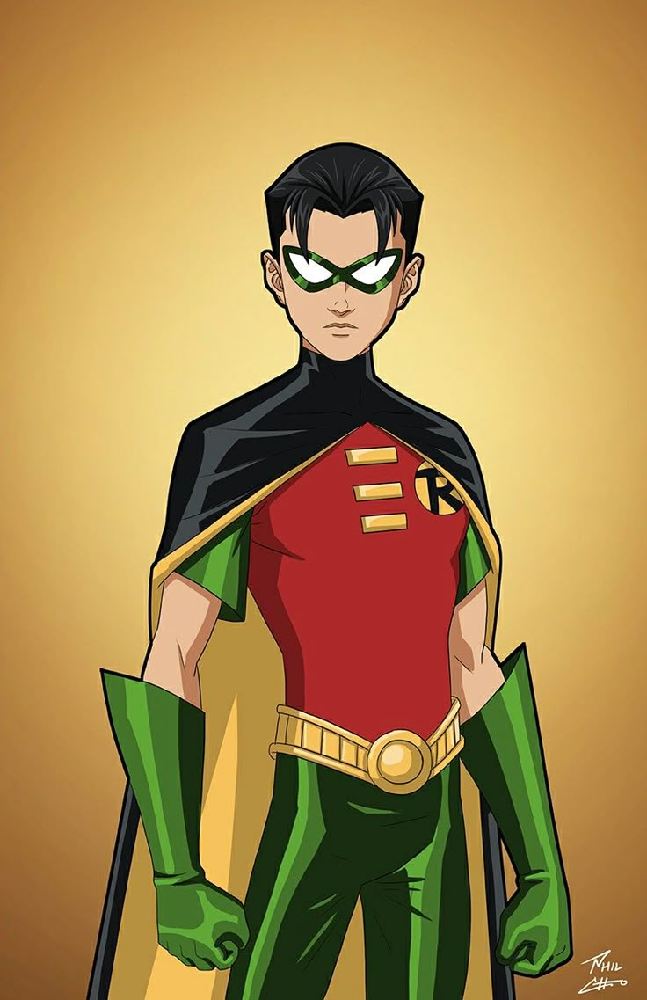
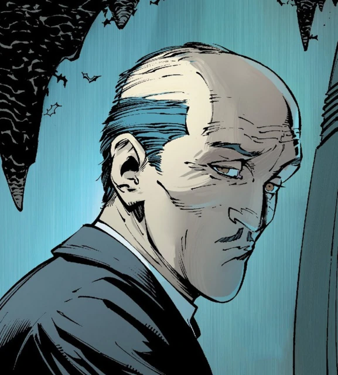
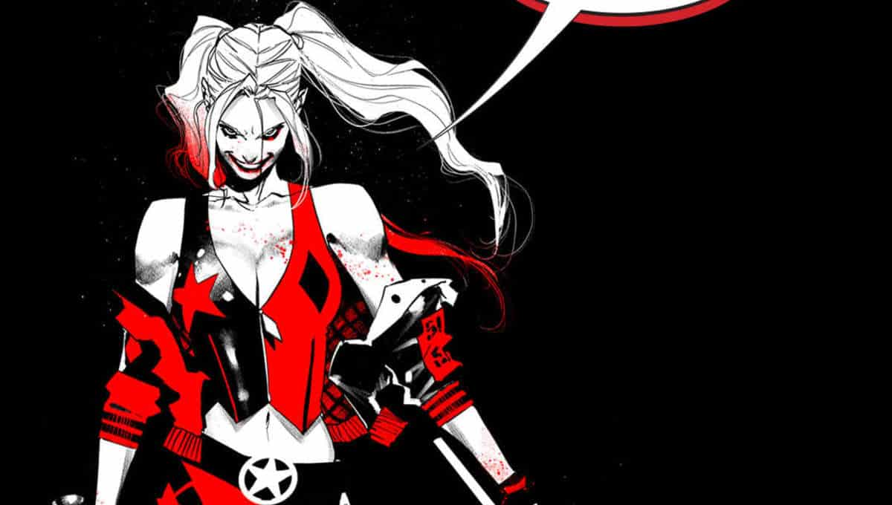
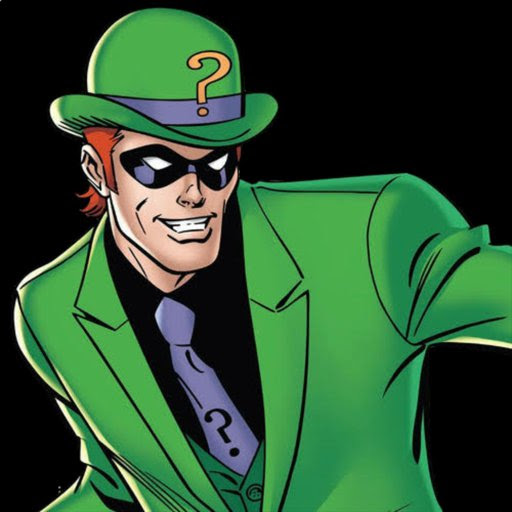

O Batman é o alter ego de Bruce Wayne, ele não possui super poderes, então depende de seus equipamentos, inteligência e habilidades físicas para lutar contra os vilões.
Esta é uma imagem do Batman
Alguns aliados do Batman:
O primeiro Robin, Dick Grayson, era um acobrata de circo que perdeu seus pais, então Batman o treinou para ser seu aliado.
Alfred é o fiel mordomo de Batman e da família Wayne, sendo um conselheiro, médico e até mesmo estrategista para Batman.
É o chefe do departamento de polícia de Gotham City, sendo um dos poucos policiais honestos, trabalhando em colaboração com Batman.

Alguns vilões do Batman:
A Arlequina era psiquiatra de Coringa no Asilo Arkham, porém se apaixonou por ele e virou sua principal capanga, sendo frequentemente desprezada por Coringa.
O Charada é uma grande mente criminosa e sua intenção é sempre desafiar Batman através de pistas e crimes baseados em charadas, sua genialidade é tanta que rivaliza com a de Batman.
Victor Zsasz é um assassino em série que marca seu próprio corpo por cada uma de suas vitmas.